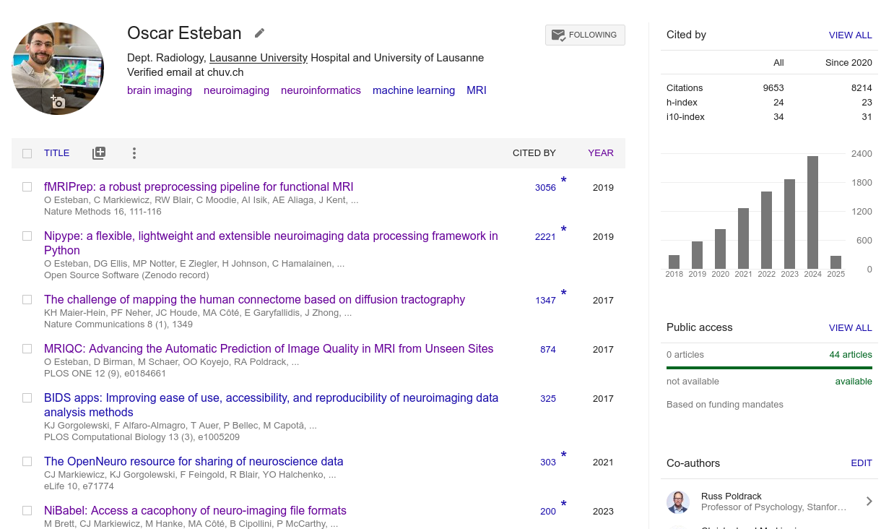
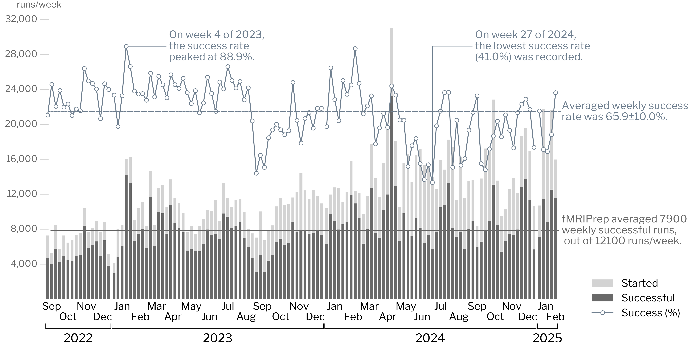
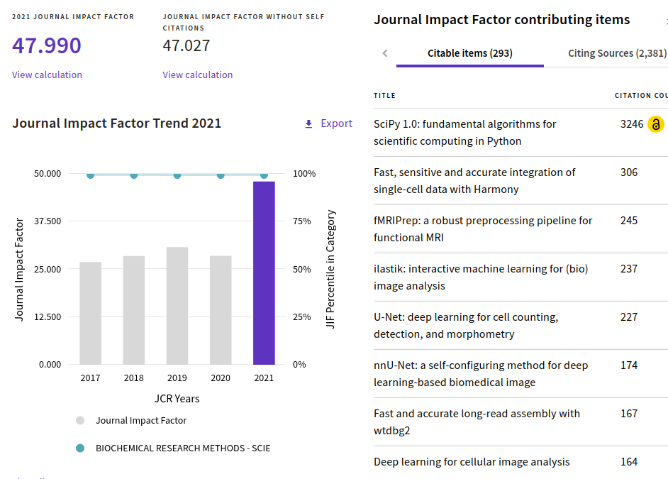
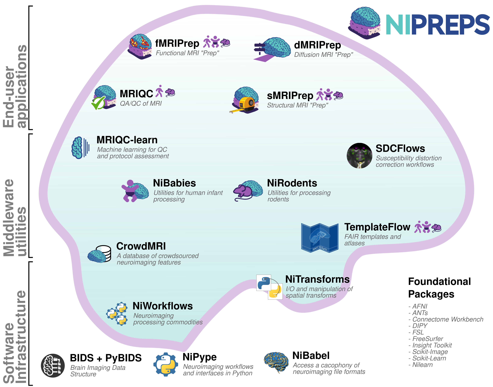

name: newsection layout: true .perma-sidebar[ <p class="rotate"> <a rel="license" href="http://creativecommons.org/licenses/by/4.0/"><img alt="Creative Commons License" style="border-width:0; height: 20px; padding-top: 6px;" src="https://i.creativecommons.org/l/by/4.0/88x31.png" /></a> <span style="padding-left: 10px; font-weight: 600;">Introducing Oscar Esteban | 21.02.2025</span> </p> ] --- # About me .right-column3.center[ (Link to talk) <a href="https://oesteban.github.io/talks/20250221/"> <br /> https://oesteban.github.io/talks/20250221/ </a> ] .pad-top.left-column3[ .people-table.larger[ | | | |---:|---| |  | **Oscar Esteban** <br /> Research & Teaching FNS Fellow <br /> Head of [AxonLab](https://www.axonlab.org) <br /> Dept. of Radiology, CHUV | ] I'm a **computational neuroscientist** and **open science** advocate. Ph.D. (2015) @ Universidad Politécnica de Madrid [ESKAS (2012) @ EPFL], PD (2020) @ Stanford University <!-- At Stanford University, we created *fMRIPrep* and initiated [*NiPreps*](https://www.nipreps.org), focusing on ensuring robust, standardized research across studies. I currently lead the *Human Connectome PHantom project*, tackling the challenge of characterizing the reliability of brain networks. --> .larger[***Mental* health—both human and machine—**is becoming the next big challenge.] Hallucinations · Confabulation · Cognitive overload · Forgetting · Delusions · Bias · Attention · Agency · Emergent Behavior ] --- .boxed-content[ .center.small[ <object data="images/esteban-feb2025.pdf" type="application/pdf" style="margin-top: 15px;" width="100%" height="600px"> <embed src="images/esteban-feb2025.pdf"> <p>This browser does not support PDFs. Please download the PDF to view it: <a href="images/program.pdf">Download PDF</a>.</p> </embed> </object> https://oesteban.github.io/talks/20250221/images/esteban-feb2025.pdf ] ] --- <p align="center"> <br /> </p> --- <br /> <p align="center"> <br /> </p> --- <p align="center"> <br /> </p> --- <p align="center"> <br /> </p> --- <p align="center"> <img src="images/cohort1.svg" width="65%" /><br /> </p> --- ## Alignment with the position (1) .boxed-content[ * Assume leadership in at least one research area and conduct original and exploratory research within Idiap's Research Programs. <i class="fa-solid fa-circle-right"></i> .larger[Looking forward to integrate my research in the AI4Life program] <i class="fa-solid fa-circle-right"></i> .larger[Research program to build digital twin networks of the brain, causality & counterfactuals toward personalized medicine] * enabled by my work on reproducibility and networks reliability. * Grow and lead a research team, promote cross-disciplinary collaboration, and secure funding through successful project proposals. <i class="fa-solid fa-circle-right"></i> .larger[Axon Lab] <i class="fa-solid fa-circle-right"></i> .larger[Collaboration plan] * Luisier, Anjos, Kodrasi, Freitas, Liebling, Marcel, Teney <i class="fa-solid fa-circle-right"></i> .larger[Funding from SNSF, US NIMH, US CZI EOSS] * in preparation: ERC Consolidator, WSS, US NSF, US NIMH R01 (pending) <i class="fa-solid fa-circle-right"></i> .larger[NiPreps Community, NMIND, es-fMRI, etc.] ] --- ## Alignment with the position (2) .boxed-content[ .larger[ * Lead externally funded research projects and supervise team members at various levels (research assistants, postdocs, research associates, and R&D developers). <i class="fa-solid fa-circle-right"></i> Track record of supervision, first Ph.D. Thesis in Switzerland * Regularly publish high-quality research findings in peer-reviewed journals, share knowledge internally through seminars and courses, and contribute to the scientific community through tutorials, workshops, and conference presentations. <i class="fa-solid fa-circle-right"></i> Over 6,600 citations in Q1 journals <i class="fa-solid fa-circle-plus"></i> Registered Reports <i class="fa-solid fa-circle-right"></i> Strong track record of "nonformal" teaching and education <i class="fa-solid fa-circle-right"></i> OHBM, ISMRM, MICCAI ]] --- ## Alignment with the position (3) .boxed-content[ .larger[ * Support the institute's goal of translating research into business opportunities. <i class="fa-solid fa-circle-right"></i> Open Source business model (charge support, consulting) * Identify opportunities for technology transfer and industrial collaborations. <i class="fa-solid fa-circle-right"></i> Licensed two molecular imaging applications (QuantiDOPA, FocusDET) * Initiate and participate in the development of demonstrators and prototypes. <i class="fa-solid fa-circle-right"></i> Hands-on learning, NiPraxis, Software demonstrations * Contribute to initiatives that support research and innovation at the institute. <i class="fa-solid fa-circle-right"></i> Open Science, International Visibility <i class="fa-solid fa-circle-right"></i> CIBM, Campus Biotech, SIB ]]